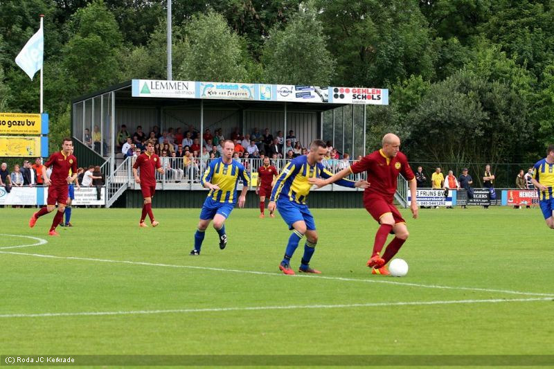

Roda begon voortvarend aan het duel met de vierdeklasser.
Binnen een kwartier was het al 0-4. Brian Jacobs en Daryl Werker maakten een
goede indruk. Jacobs was, evenals Lagouireh aan de rechterkant, gevaarlijk
met dribbels en voorzetten vanaf de flanken. Frank Demouge kreeg ze geregeld
op maat aangegeven. Hij scoorde twee keer.
Ondanks dat Roda na rust wat meer moeite had met een doelpunt maken, waren
er veel kansen.

Opstelling Roda JC Kerkrade
Verbist ('46 Van Leer), Monteyne ('46 Dijkhuizen), Ramos ('46 Letschert),
Werker ('46 Rutjes), Van Peppen ('46 Wijnen), Pluim, Van Hyfte, Paulissen
('46 Höcher), Lagouireh ('46 Biemans), Demouge ('46 Cicilia) en Jacobs ('46
Bösing).
Scoreverloop
'4 0-1 Paulissen
'6 0-2 Van Hyfte
'14 0-3 Demouge
'16 0-4 Van Hyfte
'20 0-5 Pluim
'24 0-6 Demouge
'28 0-7 Van Hyfte
'43 0-8 Pluim
'52 0-9 Cicilia
'55 0-10 Höcher
'78 0-11 Van Hyfte